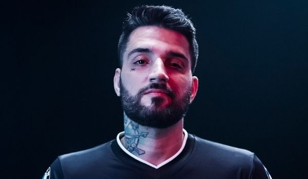
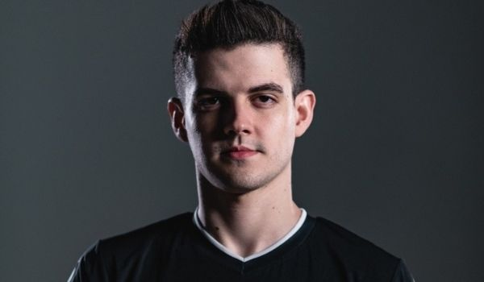

Sobre nós
O que é paiN Gaming?
Em suas redes sociais, a empresa se autodenomina como a maior organização de eSports da América Latina. Esse pode ser um bom resumo inicial sobre o que é o clube paiN Gaming.
Pioneiros no cenário competitivo, possuem bastante credibilidade na comunidade. Por mais que na trajetória contem com altos e baixos, a constância na profissionalização rende frutos para a instituição.
Atualmente, somando suas redes sociais oficiais (instagram, twitter, youtube e twitch) são mais de 4 milhões de pessoas acompanhando a paiN Gaming. Sendo um número bastante significativo.
Agora, vamos entender um pouquinho sobre a trajetória desta que é um dos melhores times de LoL do Brasil.
História
História paiN Gaming Sua origem data o ano de 2010, com um time voltado para o competitivo de DotA e DotA 2. É uma das equipes brasileiras pioneiras na entrada de forma bastante profissional nos eSports. Conseguiu títulos importantes, ganhando visibilidade no cenário tanto interno quanto externo. Com o passar dos anos começou a atuar em outros jogos variados, explorando as possibilidades. Apesar de já ter um certo destaque, foi em 2011, quando iniciou a paiN Gaming LoL, que o sucesso começou a aumentar. Atualmente recebe o título de ser um dos times mais tradicionais de League of Legends no Brasil. Alcançou importantes marcas e títulos nos games onde passou, demonstrando que seu investimento trouxe retornos. Seu pioneirismo e confiança no mercado a fez chegar em toda a consagração atual. Para se ter uma ideia, foi a primeira instituição a trazer uma Gaming House ao país. Outro ponto também é ter sido uma das primeiras a lançar uma loja online oficial, vendendo suas camisas da paiN Gaming e outros produtos, segundo Techtudo. É por essas e outras que vemos os torcedores literalmente vestindo a camisa da equipe. Contando com uma comunidade fiel que os acompanha e apoia no cenário.
Titulos
Títulos paiN Gaming
Os títulos mais marcantes são da sua trajetória no League of Legends. É tricampeã do CbLoL, tendo levantado a taça nos seguintes splits:
2013
2º Split de 2015
1º Split de 2021
Já participou de torneios internacionais, como o MSI (Mid-Season Invitational) e o Mundial. Inclusive, foi o time brasileiro que teve a melhor participação no Mundial, isso em 2015. Também esteve no All Stars, reunião dos melhores jogadores das ligas mundiais.
Apesar de todas as conquistas, a equipe também conta com um rebaixamento no currículo. Passou por um período crítico do qual, onde esteve bem em baixa, mostrando que a instabilidade e quedas também fazem parte do percurso.
O destaque em LoL não diminui o brilho de suas participações em outros jogos. Também já levou títulos em:
CS:GO
Hearthstone
Smite
Cross Fire
DotA
DotA 2
Maiores nomes
brTT
Falar da paiN Gaming sem falar de brTT é quase impossível. Um dos nomes mais importantes do LoL nacional, um atirador com 10 anos de carreira no profissional. Sua relação com a paiN Gaming contou com saídas e retornos. Apesar disso, o jogador esteve com a equipe em todos os seus títulos. Apesar de ter jogado o campeonato em 2021 e ganhado até troféu no prêmio CbLoL, brTT anunciou uma pausa na sua carreira. Existindo a possibilidade de não retornar para o competitivo. Com isso, não faz mais parte do elenco. Só que é um dos jogadores que mais fizeram história na equipe.
Kami
O segundo grande nome da paiN Gaming e que também anunciou um fim na carreira recentemente. Kami esteve na equipe em dois dos três títulos do CbLoL e também teve grande destaque. Sua participação no competitivo sempre foi vestindo a camisa do time, só que chegou a dar uma pausa na carreira em 2018. Seu retorno aconteceu em 2019, mas a aposentadoria oficial foi anunciada em 2020. pesar de não participar mais como atleta, Kami continua ativo na criação de conteúdo. Seu canal no YouTube conta com mais de 800 mil inscritos e seus vídeos ainda são vestindo a camisa da paiN Gaming LoL.